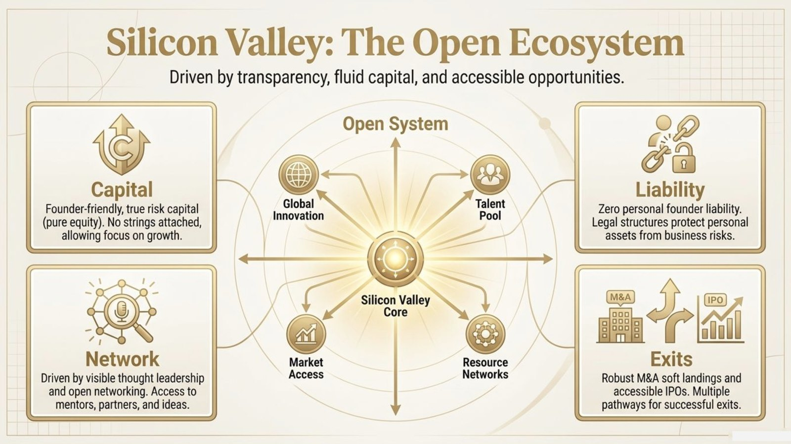
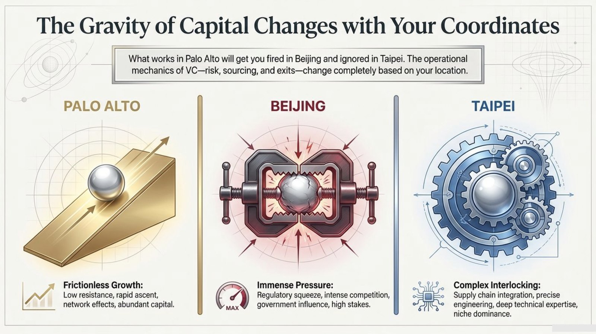

We launched VC Academy in Taipei on August 14. Applications for the founding cohort are now open — about 10 seats.
It's the question we hear most — from students, analysts, and founders ready to cross to the other side of the table. VC Academy is a small, in-person program where working investors teach the real job: how the venture world runs, how to run due diligence without drowning in it, and how to handle a term sheet.
In person in Taipei · Built around your job · ~10 seats, invitation only · Applications reviewed on a rolling basis
14
Years in Taiwan's Ecosystem
4
Curriculum Pillars
10
Founding-Cohort Seats
2026
Founding Cohort
Our mentors invest, operate, and scout across
The Problem
Wanting in is easy. The job is the hard part.
After 14 years in Taiwan's startup scene, taking the same calls from students and would-be investors, three gaps come up again and again.
🚪
GAP 1
No Path In
"How do I break into VC?" We get asked this more than anything else. Most people have never had it answered properly: what the job actually needs, how firms hire, and where to even start.
📑
GAP 2
The Terminology Wall
Junior VCs freeze on the language of the deal. They're handed a term sheet — or asked to issue one — and don't know which clauses matter, what to push back on, or which tools to use.
🔍
GAP 3
Checklist Diligence
New investors try to check everything. Real VCs run strategic, focused due diligence — asking the few questions that fit their thesis and passing early when a deal doesn't fit, instead of drowning in a generic checklist.
The Curriculum
Three pillars of craft. Plus the business of VC.
Built around what junior VCs are usually missing, and benchmarked against how the leading programs abroad teach it, then tailored for Taiwan. The full curriculum also covers fund economics, portfolio math, and exits.
PILLAR 01
The VC Ecosystem
How venture capital really works — investor types, stages, ticket sizes, and technology focus. Silicon Valley as the anchor case, extended to Japan, Korea, and Europe. How founders and family offices get connected to early-stage VCs.
PILLAR 02
Roles & Strategic Due Diligence
Know your seat: lead, anchor, or co-investor. Run focused, thesis-driven due diligence instead of checking everything. Build the right questions, read the founder's answers, and pass early when a deal doesn't fit.
PILLAR 03
Term Sheets & the Deal
Decode the terminology that trips up junior VCs. Read and issue term sheets, know which comments and items to add, and master the tools — all taught as real, structured cases from live deals.
Applications Open · Founding Cohort · ~10 Seats
Apply to the founding cohort.
We launched VC Academy in Taipei on August 14. The founding cohort is now taking applications — about 10 seats, in person, scheduled around your working week. See what the launch was like →
Built by people who actually do this for a living.
2011-2013
Yushan Ventures
Co-founded in Taipei. Introduced Startup Weekend to Taiwan with events at Google, Microsoft, and top universities — first contact with thousands of founders.
2012-2018
APEC Accelerator Network
Built the APEC Accelerator Network with Taiwan's MoEA. Pitch events and cross-border deal flow across APEC economies for 6 consecutive years.
2015-PRESENT
VW Group / Audi Scouting
Technology scouting and diligence for Volkswagen Group and Audi. A 25+ country deal-sourcing network across 5 continents.
2018
Mosaic Venture Lab
Deep-tech accelerator partnered with Audi AG and Continental AG. Evaluating, backing, and connecting East Asian innovation to global capital.
2024-2025
180+ Startups Trained
Trained 180+ startups for CES and VivaTech, and professors for ITRI — from the investor's side of the table, evaluating what makes a company fundable.
2026
VC Academy
What we've learned doing the job, turned into a proper in-person program for people in Taiwan who want to invest.
How It Works
In person. Around your job. In a room with working VCs.
🤝
Face-to-Face, Not a Webinar
The first cohort meets in person at our Taipei office. Small room, ~10 people, real conversation. Sessions are scheduled around working hours, so professionals and students can both attend.
📂
Taught Through Real Cases
No abstract lectures. Every module is structured around real deals — actual term sheets, real diligence questions, and the judgment calls investors make under uncertainty.
🧭
Mentored by Active Investors
Our mentors are working VCs, operators, and corporate-venture scouts. They've sourced, diligenced, and passed on hundreds of deals — and they'll tell you why.
By the Numbers
The skills you'll learn to read on sight.
A few of the things every investor handles without thinking. You'll work through them on real deals in the program. Figures are illustrative.
The funding ladder
Every stage has its own check size. Read an investor's stage and you've read their strategy — and where you'd fit.
The funnel
Hundreds of companies for every cheque written. Most of the job is a fast, well-reasoned no.
Dilution over time
Founders give up ownership round after round. The cap table is where a deal's economics actually live.
How This Is Different
A finance degree teaches you to value a company. We teach you to back one.
Typical Finance / VC Course
VC Academy
Curriculum
DCF models, market theory, case write-ups, fund structures in the abstract.
Ecosystem mapping, deal sourcing, strategic due diligence, term-sheet navigation.
Taught By
Professors and finance generalists.
Working VCs, operators, and corporate-venture scouts who write and read term sheets.
Method
Lectures and theoretical case studies.
Real deals, real diligence questions, mentor debriefs on actual judgment calls.
The Question
"What is venture capital?"
"How do I become a VC — and what does the job actually require?"
Format
Semester-long, lecture hall, graded.
In-person cohort in Taipei, scheduled around your job. Invitation only, ~10 seats.
Best For
Students wanting academic credit.
Aspiring investors, analysts, founders, and family-office members who want in.
To be clear: there are excellent programs out there — VC University, Kauffman Fellows, the Newton Program, Techstars' Venture Deals. Most run online, sit in the US or Europe, and are priced for people already inside the industry. We've borrowed the best of how they teach. VC Academy is the one built for here: in person, in Taipei, taught by investors working this market and the Silicon Valley, Berlin, and Tokyo corridors we operate in every day.
The founding cohort is forming.
We launched in Taipei on August 14. What comes next is the program itself — in person, built around your working week, about 10 seats. Applications are open now.
Recap · Launch Event · Fri, Aug 14 2026
We opened VC Academy. One afternoon in Taipei.
On Friday, August 14, we opened VC Academy with a free afternoon at the Mosaic Venture Lab office in Taipei. Working VCs talked about how they actually invest, the floor opened up for questions, and we walked the room through the full program — over whisky highballs and a lot of good conversation. Here's what the afternoon covered.
What we covered
An afternoon with working VCs.
01
Guest VCs, unfiltered
Working investors talked through how they actually pick deals and where the returns really come from — then opened the floor to the room's questions.
02
Scouting: the door nobody guards
The real routes into venture, and why the most reliable one is unguarded: what a scout actually does, what a fund gives back, and what it costs you — nothing but judgment, in public, on the record.
03
How Silicon Valley invests
The Valley as an open system — founder-friendly risk capital, visible networks, limited founder liability, and multiple exit paths. Then the harder question: how much of that survives the trip to Taipei.
04
The gravity of capital
Why what works in Palo Alto gets you ignored in Taipei — how risk, sourcing, and exits change completely with your coordinates. Plus a first look at the full VC Academy curriculum.
From the deck
Two ideas from the afternoon.

Why the Valley works the way it does: founder-friendly risk capital, networks you can actually reach, limited personal liability, and more than one way out.

And why none of it transfers cleanly. Risk, sourcing, and exits work differently in Palo Alto, Beijing, and Taipei — knowing which rules you're playing by is most of the job.
Want the full deck?
The complete slides from the August 14 launch — the ecosystem map, the scouting routes in, and the walk-through of the program.
The launch is done — the founding cohort is what comes next. In person in Taipei, scheduled around your job, about 10 seats. If the afternoon sounded like your room, apply.
Four pillars, built around what junior VCs are usually missing and benchmarked against how the leading programs abroad teach it, then tailored for Taiwan. This is what the founding cohort works through, session by session.
Applications Open · Founding Cohort
Ready to sit in the room?
This is the curriculum the founding cohort works through — in person at our Taipei office, scheduled around your job, about 10 seats.
A working map of how venture capital actually operates — and how to find your way into it.
1
In-Person · Session
How the Ecosystem Works
A brief but concrete introduction to the VC ecosystem, using Silicon Valley as the anchor case. What kinds of VCs exist, what stages they invest at, their typical ticket sizes, and the technologies they focus on. The mental model you need before anything else makes sense.
→ FOUNDATION · Open to all cohort members
2
In-Person · Session
Getting Connected
How founders, angels, and family offices actually get connected to early-stage VCs — and how a new investor builds the relationships and deal flow that make a career possible. The unwritten mechanics of the network.
→ FOUNDATION · Sourcing & relationships
3
In-Person · Session
Taiwan, Asia & Beyond Silicon Valley
The same ecosystem map, brought home to Taiwan and Greater China, then extended to Japan, Korea, and Europe. The local players you need to know — Taiwania Capital, the National Development Fund, AppWorks, CDIB — and how cross-border deals between Taipei, Silicon Valley, Berlin, and Tokyo actually get done. That bridge is what Mosaic does for a living.
→ FOUNDATION · Taiwan in a global market
Pillar 1: every investor lives on one rung of this ladder. Knowing which rung tells you almost everything about how they work.
PILLAR 02
Investor Roles & Strategic Due Diligence
Know your seat at the table — and how real investors decide what to dig into and what to walk away from.
4
In-Person · Session
Lead, Anchor, or Co-Investor
When deal flow arrives, you need to understand your position in the round. What it means to play lead investor versus anchor versus co-investor — the different responsibilities, leverage, and expectations that come with each seat.
→ DEAL MECHANICS · Your role in the round
5
In-Person · Session
Strategic, Focused Diligence
A conceptual lecture on how to run strategic due diligence — not checking everything, but asking the questions that fit your thesis. How to build a strong, focused diligence question set instead of a generic checklist, and how to weight what you learn.
→ DEAL MECHANICS · The art of the right questions
6
In-Person · Session
Reading the Answers & Passing Early
Some questions a founder won't be able to answer — and that's signal. How to read those moments, recognize when a case doesn't fit your needs, and pass early with conviction instead of burning weeks on diligence that was never going to convert.
→ DEAL MECHANICS · Conviction & the early no
Pillar 2: hundreds of deals for every cheque. The skill is deciding fast what to dig into — and passing on the rest with a clear reason.
PILLAR 03
Term Sheets & the Language of the Deal
The detail work — the terminology, the documents, and the tools junior VCs are never taught.
7
In-Person · Case Study
Decoding the Terminology
The terms and concepts junior VCs trip over, made concrete. What they mean, why they exist, and how they shape a deal — so you can read a document and a conversation without bluffing.
→ THE DEAL · Speaking the language
8
In-Person · Case Study
Issuing & Receiving a Term Sheet
Whether you're providing a term sheet to a startup or receiving one from other investors, what comments and items you need to add, what to negotiate, and what to protect. Taught as a real, structured case rather than a definition list.
→ THE DEAL · The document itself
9
In-Person · Workshop
Cap Tables, Valuation & Dilution
Hands-on with a real capitalization table. Pre- and post-money valuation, how ownership and dilution move across rounds, the option pool, and what a term sheet does to the numbers. The math every investor is expected to run, often in their head.
→ THE DEAL · The numbers behind the deal
10
In-Person · Case Study
The Tools of the Trade
The platforms and tools investors actually use to manage diligence, deals, and documents — and how to use them well. You leave able to operate, not just describe.
→ THE DEAL · Working like a professional
Pillar 3: what a term sheet does to the cap table. Founders give up ownership round after round — you'll learn to read and run these numbers.
PILLAR 04
The Business of VC: Funds, Economics & Exits
How the money actually works — the part most courses skip and most juniors learn the hard way.
11
In-Person · Session
How a Fund Makes Money
The structure behind every VC: limited partners and general partners, the management fee, carried interest, and the ten-year fund lifecycle. Why fund size quietly dictates what stage you invest at and how big your checks can be. Understand this and you understand why VCs behave the way they do.
→ THE BUSINESS · Fund economics
12
In-Person · Session
Portfolio Construction & the Power Law
Ownership targets, reserves and follow-on capital, how many bets a fund actually makes, and why a single outlier has to carry the whole portfolio. How that one piece of math shapes every decision a VC makes — including the ones that look irrational from the outside.
→ THE BUSINESS · Building a portfolio
13
In-Person · Session
Exits, Returns & Life After the Check
How money comes back: trade sales, IPOs, and the secondary market. Why exits decide a fund's reputation and its next raise. Then the years in between — the board seat, governance, and the real job of supporting a founder once your money is in.
→ THE BUSINESS · Returns & post-investment
Pillar 4: a fund loses money for years before exits pay out — the J-curve. It's why patience, management fees, and carry all work the way they do.
Four pillars, taught in person at our Taipei office, each one through real cases with mentor Q&A. The structure draws on how the leading programs teach — VC University (Berkeley Law / NVCA), Kauffman Fellows, the Newton Program (London Business School), and Techstars' Venture Deals — adapted for Taiwan and for the people who actually invest here. Final session count and sequencing are set with each cohort.
Teaching Method
How the sessions actually run.
A lot of VC teaching is either theory you can't use or war stories you can't learn from. We work off real deals, and the investors who've done them sit in and talk through the calls they made.
20%
Concept
The framework. The mental model before the detail.
45%
Real Cases
Actual deals, term sheets, and diligence sets.
20%
Mentor Debrief
Working VCs on why they'd back it — or pass.
15%
Your Reps
You build the question set. You mark up the sheet.
What Happens in the Room
You'll be doing the work.
The Diligence Build
Given a real deal and a thesis, build the focused set of questions that actually matter. A mentor plays the founder. Some questions land; some can't be answered — and you decide what that tells you.
The Term-Sheet Markup
Take a real term sheet and mark it up from the investor's side. Which clauses to add, which to push on, which to protect. A mentor who has negotiated the same terms walks the room through their reasoning.
The Early No
A stack of deals, limited time. Practice the skill real VCs live by: passing fast on what doesn't fit your thesis, with a clear reason — instead of running full diligence on every case that crosses your desk.
Know Your Seat
Run the same deal as lead, as anchor, and as co-investor. See how your leverage, responsibilities, and questions change with the seat you hold in the round.
Why this method.
Junior VCs don't fail because they lack frameworks — they fail because they've never seen a real term sheet, never built a diligence set under time pressure, and never had a working investor tell them why a deal was a pass. We've spent 14 years on the investor's side of the table, scouting for Volkswagen and Audi and evaluating hundreds of startups for CES and VivaTech. VC Academy is that experience, structured into reps you can actually practice.
What You Walk Away With
Skills you can use on a real deal.
Everything on this list is something you can use the first time a real deal lands on your desk.
✓
A working map of the ecosystem
Investor types, stages, ticket sizes, and tech focus — across Silicon Valley, Japan, Korea, and Europe. You know who does what, and where you fit.
✓
Clarity on the path in
A straight answer to "how do I become a VC?" — the core requirements, the real career routes, and how the industry actually hires.
✓
A strategic diligence framework
The ability to build a focused, thesis-driven diligence question set instead of a generic checklist — and to know what each answer means.
✓
The confidence to pass early
How to recognize when a deal doesn't fit and walk away fast, with a clear reason — the discipline that separates real investors from collectors of meetings.
✓
Command of the terminology
You can read a term sheet and a deal conversation without bluffing — you know what the language means and why it's there.
✓
Term-sheet fluency
How to issue and receive a term sheet, which comments and items to add, and what to negotiate — practiced on a real document.
✓
Role awareness
A clear sense of how to operate as lead, anchor, or co-investor, and how your leverage and responsibilities shift with each seat.
✓
A network of working investors
Direct time with active VCs, operators, and corporate-venture scouts — the kind of relationships that open the first door.
From the Faculty
Why we built this.
How can I become a VC? I can't count how many calls I've had with a business student asking exactly that. They don't need another lecture on what venture capital is — they need someone to show them the craft.
A junior VC's hardest moments are the small ones — the term they don't recognize, the diligence question they don't know to ask. We teach those through real cases, the way you actually learn them on the job.
— Johnny Yu · Partner, Mosaic Venture Lab
The best investors don't check everything. They ask the few questions that matter, read the answers, and move. That judgment is learnable — and it's what this program is for.
— Ken Huang · Partner, Mosaic Venture Lab
Who We Are
14 years on the investor's side of the table.
Mosaic Venture Lab has been in Taiwan's venture ecosystem since 2011, originally as Yushan Ventures. We don't teach venture capital from a textbook — we've been sourcing, scouting, and evaluating deals the whole time.
2011-2013
Yushan Ventures & Startup Weekend Taiwan
Co-founded Yushan Ventures in Taipei. Introduced Startup Weekend to Taiwan — events at Google Taiwan, Microsoft Taiwan, and top universities in Hsinchu, Tainan, Kaohsiung, and Taipei. First contact with thousands of founders.
2012-2018
APEC Accelerator Network O2O
Conceptualized and co-managed the APEC Accelerator Network with Taiwan's Ministry of Economic Affairs (MoEA/SMEA). Cross-border pitch events and deal flow across APEC economies for 6 years.
2015-PRESENT
Volkswagen Group / Audi Scouting
Technology scouting and diligence partner for Volkswagen Group, with Audi as innovation partner. Active deal-sourcing network across 25+ countries and 5 continents.
2018
Mosaic Venture Lab
Established as a deep-tech accelerator and scouting partner for Audi AG and Continental AG. Focused on connecting East Asian innovation to European automotive and industrial capital.
2024-2025
CES, VivaTech & ITRI
Trained 180+ startups for CES 2026 and VivaTech 2025, and professors for ITRI on patent commercialization — evaluating, from the investor's seat, what actually makes a company fundable.
2026
VC Academy
The first structured, in-person program in Taiwan dedicated to training the next generation of venture capitalists — built from everything we've learned doing the job.
Programs & Partners
Faculty & Mentors
People who do this for a living.
The program is led by Mosaic Venture Lab's partners and taught with a volunteer network of VCs, operators, and corporate-venture scouts — people who source, diligence, and negotiate deals as their day job.
A rotating circle of VC friends joining each cohort
Mentors participate on a volunteer basis. The lineup is confirmed with each cohort and may vary by session.
Join the Founding Cohort
Applications are open. About 10 seats.
We launched VC Academy in Taipei on August 14 — attendees rated the afternoon 4.9 out of 5. What comes next is the program itself: in person, built around your working week, taught by working investors. Tell us a little about yourself below and we'll be in touch.
Who should apply.
Students and recent graduates who keep asking how to break into venture capital and want a straight answer. Founders and operators who've raised — or will — and want to read the table from the investor's side. Aspiring angels who have the appetite but not the deal flow. Analysts, corporates, and family offices moving into early-stage investing.
That's roughly the room we had on August 14 — and the questions they asked are what the cohort is built around.
The founding cohort is small and invitation-only — we keep the room to about 10 people so every participant gets real time with the mentors.
Program details.
Format: In-person sessions at the Mosaic Venture Lab office, Taipei, scheduled around working commitments.
First cohort: Founding cohort, starting Oct 2026.
Cohort size: ~10 participants. Invitation only.
Focus: Deal evaluation, term sheets, and valuation.
Launched: Opened to the public in Taipei on August 14, 2026.
Investment: Program details and pricing are shared with shortlisted applicants.
Application
✓
Application received.
Thanks — we've got it. We review applications on a rolling basis and will be in touch by email.
Questions?
Contact the VC Academy team at Mosaic Venture Lab. Email: vh@mvl.biz · kh@mvl.biz · jy@mvl.biz Location: Taipei, Taiwan
Common Questions
Before you apply.
Do I need finance or investing experience?
No. The program is built for people trying to break in — business students, aspiring analysts, operators, and founders. We start from how the ecosystem works and build up to the deal mechanics.
I missed the launch event — can I still apply?
Yes. The free launch event on August 14 was an introduction to the program, not a requirement. Applications for the founding cohort are open to everyone — you can read the recap of that afternoon to see what it covered.
When and where does it run?
In person, at the Mosaic Venture Lab office in Taipei. Sessions are scheduled around participants' working commitments — exact dates and times are confirmed with applicants once the room is set.
How big is the cohort?
Small by design — about 10 participants for the founding cohort, invitation only, so everyone gets direct time with working investors.
What does it cost?
We share full program details and pricing with shortlisted applicants, so you can ask questions and decide whether to continue before committing to anything.


![Audi](data:image/svg+xml,<svg%20xmlns='http://www.w3.org/2000/svg'%20viewBox='0%200%2024%2024'><path%20d='M19.848%2C7.848c-0.992%2C0-1.902%2C0.348-2.616%2C0.928c-0.714-0.58-1.624-0.928-2.616-0.928%20c-0.992%2C0-1.902%2C0.348-2.616%2C0.928c-0.714-0.58-1.624-0.928-2.616-0.928c-0.992%2C0-1.902%2C0.348-2.616%2C0.928%20c-0.714-0.58-1.624-0.928-2.616-0.928C1.859%2C7.848%2C0%2C9.707%2C0%2C12s1.859%2C4.152%2C4.152%2C4.152c0.992%2C0%2C1.902-0.348%2C2.616-0.928%20c0.714%2C0.58%2C1.624%2C0.928%2C2.616%2C0.928c0.992%2C0%2C1.902-0.348%2C2.616-0.928c0.714%2C0.58%2C1.624%2C0.928%2C2.616%2C0.928%20c0.992%2C0%2C1.902-0.348%2C2.616-0.928c0.714%2C0.58%2C1.624%2C0.928%2C2.616%2C0.928C22.141%2C16.152%2C24%2C14.293%2C24%2C12S22.141%2C7.848%2C19.848%2C7.848z%20M17.232%2C13.866c-0.376-0.526-0.598-1.17-0.598-1.866c0-0.696%2C0.222-1.34%2C0.598-1.866c0.376%2C0.526%2C0.598%2C1.17%2C0.598%2C1.866%20C17.83%2C12.696%2C17.608%2C13.34%2C17.232%2C13.866z%20M12%2C13.866c-0.376-0.526-0.598-1.17-0.598-1.866c0-0.696%2C0.222-1.34%2C0.598-1.866%20c0.376%2C0.526%2C0.598%2C1.17%2C0.598%2C1.866C12.598%2C12.696%2C12.376%2C13.34%2C12%2C13.866z%20M6.768%2C13.866C6.392%2C13.34%2C6.17%2C12.696%2C6.17%2C12%20c0-0.696%2C0.222-1.34%2C0.598-1.866C7.144%2C10.66%2C7.366%2C11.304%2C7.366%2C12C7.366%2C12.696%2C7.144%2C13.34%2C6.768%2C13.866z%20M0.938%2C12%20c0-1.775%2C1.439-3.214%2C3.214-3.214c0.736%2C0%2C1.414%2C0.248%2C1.956%2C0.665C5.56%2C10.154%2C5.232%2C11.039%2C5.232%2C12%20c0%2C0.961%2C0.328%2C1.846%2C0.876%2C2.549c-0.542%2C0.416-1.22%2C0.665-1.956%2C0.665C2.377%2C15.214%2C0.938%2C13.775%2C0.938%2C12z%20M7.428%2C14.549%20C7.976%2C13.846%2C8.304%2C12.961%2C8.304%2C12c0-0.961-0.328-1.846-0.876-2.549c0.542-0.416%2C1.22-0.665%2C1.956-0.665%20c0.736%2C0%2C1.414%2C0.248%2C1.956%2C0.665c-0.549%2C0.704-0.876%2C1.588-0.876%2C2.549c0%2C0.961%2C0.328%2C1.846%2C0.876%2C2.549%20c-0.542%2C0.416-1.22%2C0.665-1.956%2C0.665C8.648%2C15.214%2C7.97%2C14.966%2C7.428%2C14.549z%20M12.66%2C14.549c0.549-0.704%2C0.876-1.588%2C0.876-2.549%20c0-0.961-0.328-1.846-0.876-2.55c0.542-0.416%2C1.22-0.665%2C1.956-0.665s1.414%2C0.248%2C1.956%2C0.665%20c-0.549%2C0.704-0.876%2C1.588-0.876%2C2.549c0%2C0.961%2C0.328%2C1.846%2C0.876%2C2.549c-0.542%2C0.416-1.22%2C0.665-1.956%2C0.665%20C13.88%2C15.214%2C13.202%2C14.966%2C12.66%2C14.549z%20M19.848%2C15.214c-0.736%2C0-1.414-0.248-1.956-0.665c0.548-0.704%2C0.876-1.588%2C0.876-2.549%20c0-0.961-0.328-1.846-0.876-2.549c0.542-0.416%2C1.22-0.665%2C1.956-0.665c1.775%2C0%2C3.214%2C1.439%2C3.214%2C3.214%20S21.623%2C15.214%2C19.848%2C15.214z'%20fill='%23888888'/></svg>)